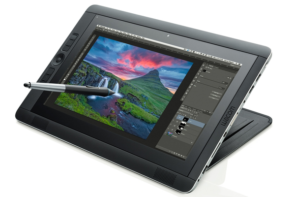
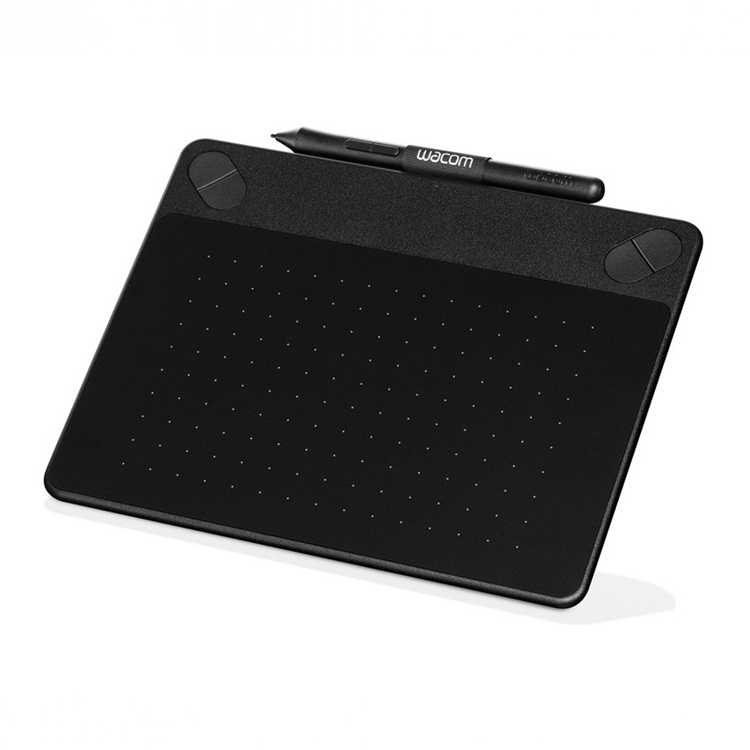
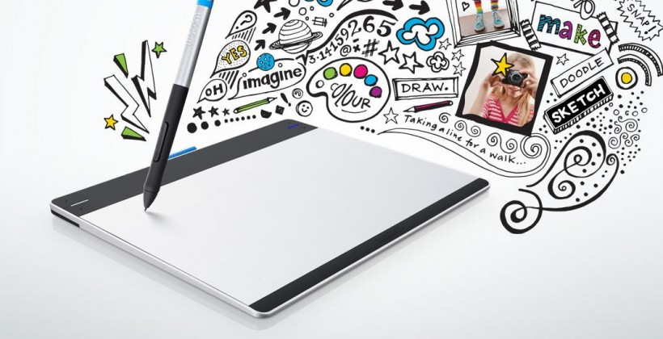
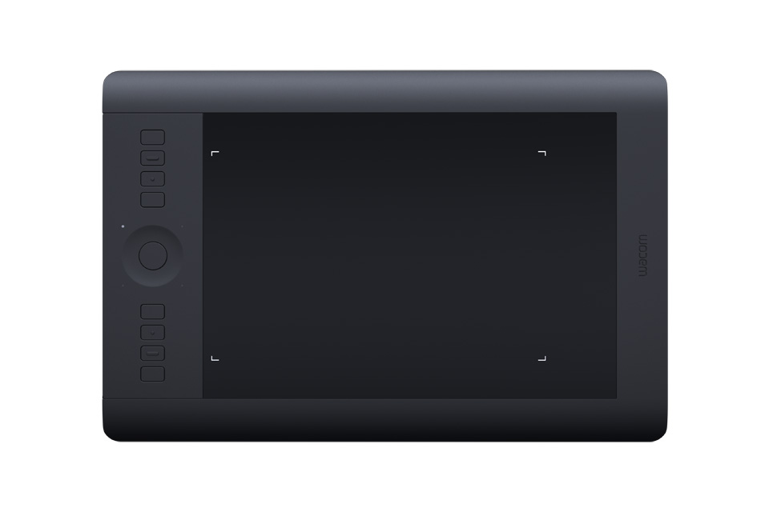
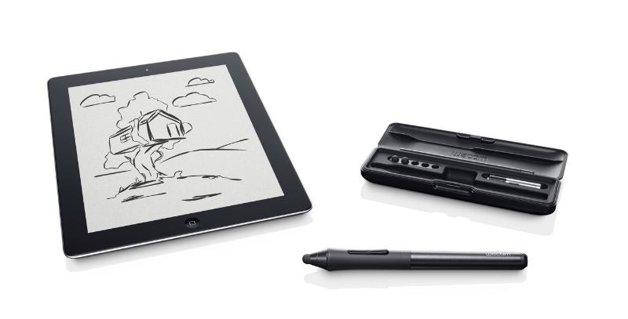

Wacom Tablets
for a creative world
PRODUCT DESCRIPTION
This innovative pen tablet combines Wacom's finest pen capabilities with intuitive multi-touch gestures and gives you the precision and control you need when using professional software and time-savers to speed up your workflow. With 2048 levels of pen pressure sensitivity and tilt recognition you can create with the accuracy and precision of traditional brushes and pens whilst multi-touch gestures let you position and navigate your work intuitively.Get the most from your creative software with your favourite pre-selected shortcuts. The Intuos Pro even detects the software you're using and offers optimal selections. Quickly access all your shortcuts through the customisable ExpressKeys and Touch Ring. Stay focused with the Express View display and Radial Menu. Discover intuitive navigation at the touch of your fingers: pan, zoom, rotate and navigate naturally with gestures, or create your own multi-touch shortcuts.
|  |
|  |
|  |
|  |
|  |
BENEFITS
After learning that No matter what your creative style or skill level, Promo products can help you to the next level. We offer four different versions, there is always a suitable for you and your creative work. Because you already know how to paint with pen and paper, using a pen is easy and intuitive. As you explore possibilities, your work has evolved a new direction from creativity ...
INGREDIENTS
Wacom Tablets helps improve your ability. Make your skills to a new level. With the Pencil Pens, you can easily switch between crayons, pencils and photo editing tools. Control the tablet will become. With touch technology, you can pan, zoom, and navigate the canvas using the same gestures you use to operate your smartphone.